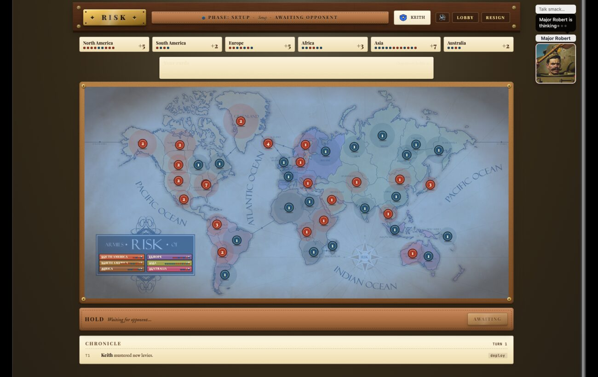
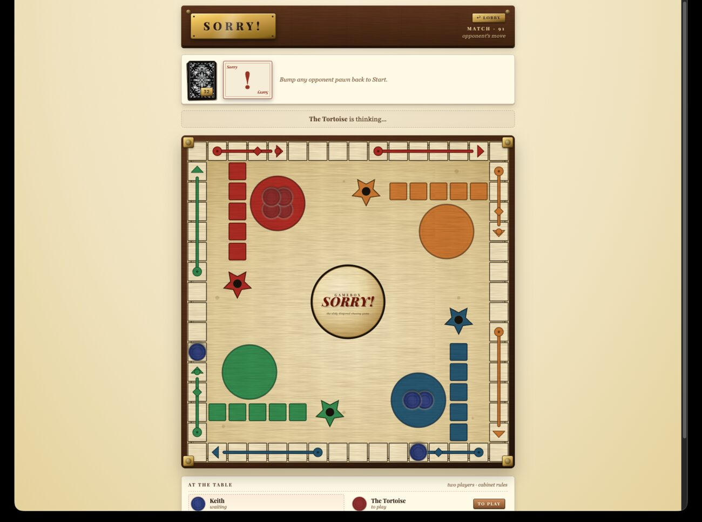

slabgorb.com
the home page of keith avery :: engineer & artist
Gamebox
// a self-hosted plugin host for two-player turn-based games
A small, sharp game host that runs on a private Tailscale network for a curated roster of friends and family — not a SaaS, not multi-tenant, personal-use by design. The host owns authentication, the roster, lobby routing, and per-game state; each game is a self-contained plugin that owns its rules and its client UI. Adding a new game is one folder and one registry line. Seven games ship today — several playable against AI opponents with personas — over a shared dice tray, shared card primitives, and an LLM-bot tournament harness underneath.

I wanted to play turn-based board and card games with family across the country — without renting them out to a platform, juggling accounts, or trusting a third party with the roster. So Gamebox is deliberately not a product: it's a single-process server that runs on my own hardware, reachable only over a private Tailscale network, for a hand-picked list of people.
The interesting constraint is extensibility. Rather than hard-code each game, the host defines a clean plugin contract and stays out of the way. The host knows about identity, the roster, the lobby, and how to store a blob of game state; it knows nothing about Scrabble racks or backgammon pips. That lives in the plugins.
A strict split between host and plugins, with a couple of shared client components in the middle so games don't reinvent dice and cards.
Each game's state is a single JSON column in SQLite. The host is single-process and better-sqlite3 is synchronous, so state writes can't race — there is no lock dance, no transaction retry loop, no eventual-consistency story to reason about. It's the kind of simplification you can only make because the scale is honest: two players, a small roster, one box.
Real-time updates ride Server-Sent Events — a game-scoped stream fires an update the instant state changes, which is all a turn-based game needs and far less machinery than a WebSocket layer. Pairings are canonical: the host always assigns playerA = min(userA, userB) and playerB = max(...), and a UNIQUE constraint makes a duplicate active game between the same pair structurally impossible.
A plugin is a plain ESM object. Implement four pure functions and declare a client directory, and the host wires up the rest — lobby entry, routing, state storage, and the SSE stream.
({ participants, rng }) → state. Deal the hand, set the board.({ state, action, actorId, rng }) → { state, ended, error?, scoreDelta? }. All rules and validation live server-side; the client is never trusted.({ state, viewerId }) → redacted_state. Hidden information (your opponent's rack, the stock) is removed per viewer./api/games/:id/<name> for things like a dictionary check.Then register it in src/plugins/index.js — one import, one array entry — and the host auto-mounts the browser client at /play/<id>/:gameId/. That's the whole ceremony: a folder and a line.
Most of the good decisions here are about not building things:
- Synchronous SQLite over a database tier. A single process with synchronous writes removes an entire class of concurrency bugs for free. The right tool for two players is not a connection pool.
- SSE over WebSockets. Turn-based games push, they don't chat. A one-way event stream is less code and less failure surface than a duplex socket.
- Server-authoritative rules, always. Every legality check — multiset balance, set legality, the initial-meld threshold, joker harvest — runs in
applyActionon the server and is validated atomically. The client renders; it never decides. - Share the primitives, not the games. A Vite-built
<dice-tray>Web Component and a shared card deck serve every plugin that needs them, so Backgammon and Buraco don't each grow their own dice. - Auth by trusting one header. In production Cloudflare Access injects the authenticated email; the app trusts that single header and 403s anyone off the roster. Locally, a
DEV_USERflag bypasses it. No session store, no password reset flow.
Several games ship with AI opponents — LLM-backed players with personas that take a real turn and trade a little table-talk: Major Robert marshalling armies in Risk, The Tortoise and The Bully chasing pawns in Sorry. Each plays the exact same plugin a human does, with a model on the other side of the contract.
Behind Risk's generals sits a bot-tournament harness: run N headless games between two model-backed players, alternate sides game-to-game to cancel first-move advantage, and report win-rates with Wilson 95% confidence intervals rather than a naive percentage. Backends are pluggable — claude:<model> via the CLI, ollama:<tag> over HTTP — and every turn is logged to JSONL: readable transcripts now, training data later. It's the part that turns "the bot feels smarter" into a number with error bars.
- Words — Words With Friends + a Scrabble variant, ENABLE2K dictionary
- Rummikub — 1998 Pressman edition, 2 jokers, 30-pt initial meld
- Cribbage — 121-pt match, pegging + show, walnut peg board
- Backgammon — match play, doubling cube + Crawford rule
- Buraco — 2-player Brazilian rules, 2 decks + 4 jokers, 3000-pt match
- Sorry — classic card-driven pawn race, with board slides and bumps
- Risk — world domination against AI generals, plus a bot-tournament harness
Node 20+Expressbetter-sqlite3ESMjs-yamlSSE// client
Vanilla JSWeb ComponentsViteReact 19Three.jsRapier// infra
Cloudflare AccessTailscalelaunchdjust- gamebox — host + all game plugins + shared libs
A single monorepo: the host, every plugin under plugins/, the shared <dice-tray> and card primitives, the ops justfile, and the Risk harness all live together.
